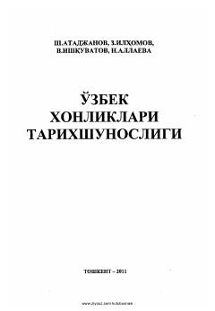

OXOʻrta Osiyo xonliklari tarixini oʻrganish boʻyicha ilmiy-uslubiy qoʻllanma.
Ushbu oʻquv qoʻllanmada Oʻrta Osiyo xonliklari tarixining oʻrganilishi, tarixshunoslik nuqtai nazaridan tahlil qilinadi. Unda tarixiy asarlarning xususiyatlari, mualliflarning yondashuvlari va xonliklar tarixining davrlashtirilishi masalalari yoritilgan.